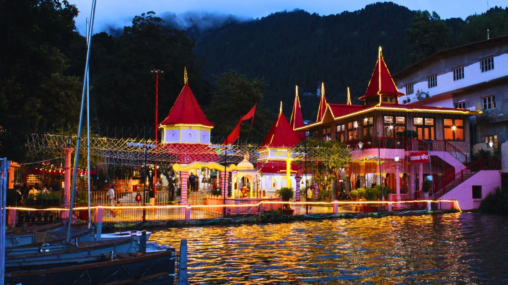
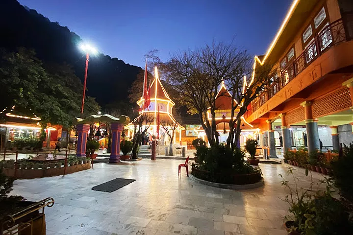
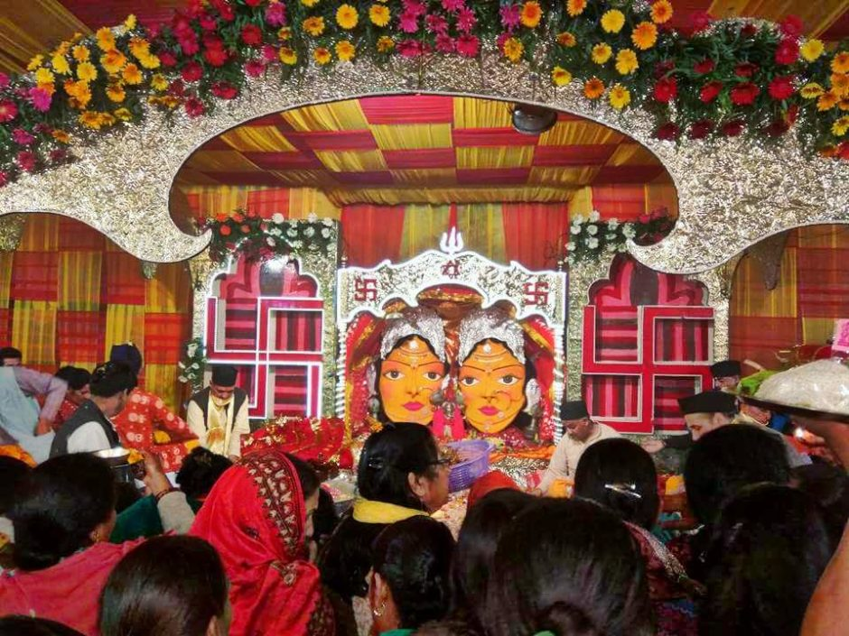
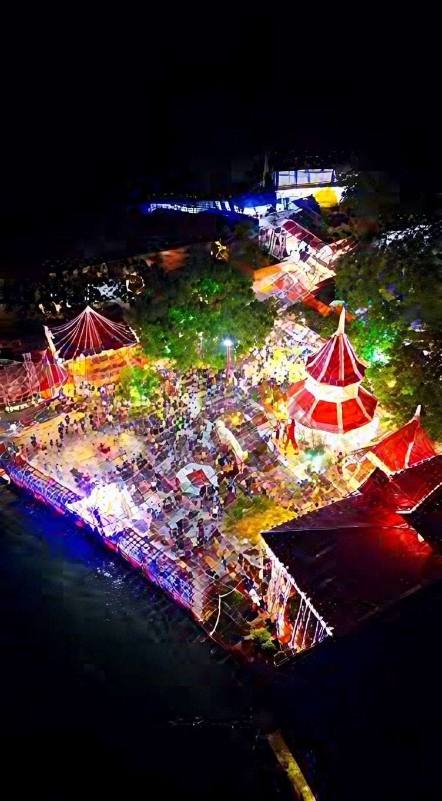
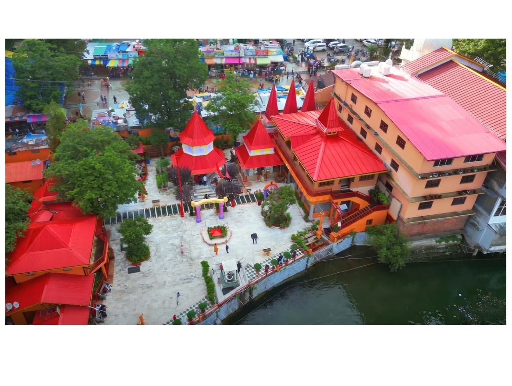
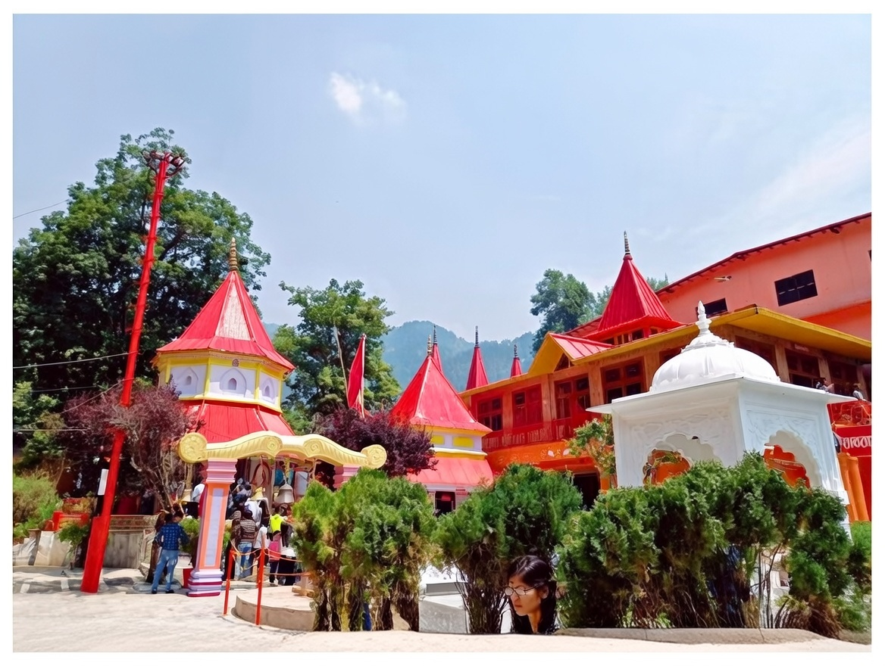
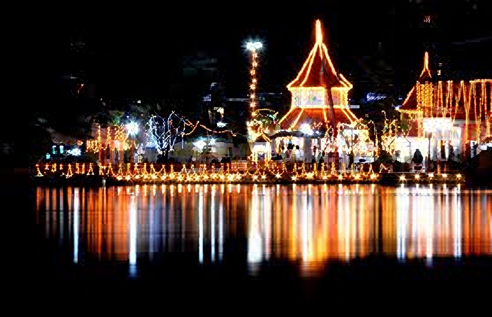
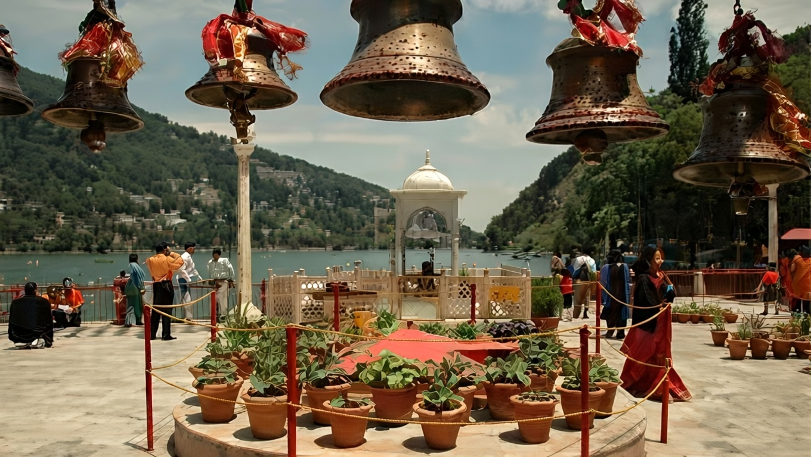
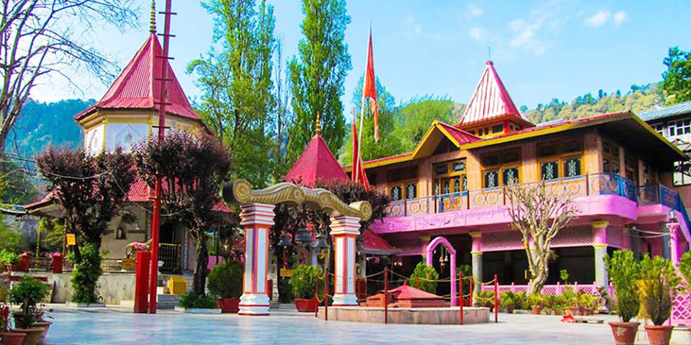
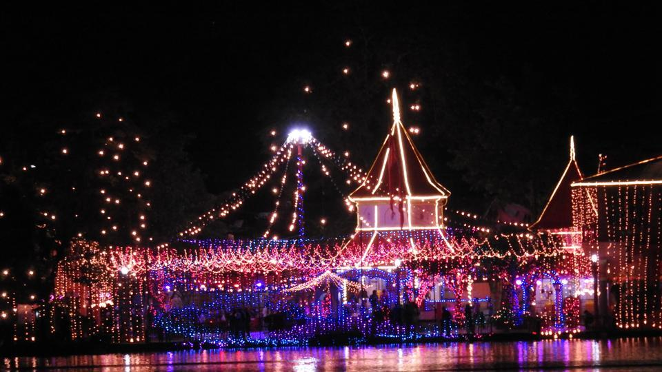

Naina Devi Temple, situated on the northern shore of the sacred Naini Lake, is one of the most revered spiritual sites in Nainital and the entire Kumaon region. Dedicated to Goddess Naina Devi (an incarnation of Goddess Sati), the temple is believed to mark the spot where the eyes ("naina") of Sati fell during Lord Shiva’s Tandava. This makes it one of the 51 Shakti Peethas, carrying immense mythological and religious significance for devotees across India.
The temple’s serene location overlooking the shimmering lake and surrounded by hills creates a deeply peaceful and divine atmosphere. Visitors often experience a profound sense of calm and spiritual connection during the evening aarti, when lamps, bells, and chants fill the air. The simple yet elegant architecture, combined with the natural beauty of Naini Lake, makes it a place where faith, nature, and tranquility come together — a true gem of Devbhoomi Uttarakhand.
Early morning for peaceful darshan and sunrise views over the lake, or evening for the mesmerizing aarti (around 6–7 PM).
One of the 51 Shakti Peethas — the eyes of Goddess Sati fell here. Devotees believe prayers here fulfill wishes and bring blessings of protection and peace.
Offer red chunari, sindoor, and flowers; attend the evening aarti; take a parikrama around the temple; and enjoy boating on Naini Lake afterward.
"Naina Devi Temple is not just a place of worship — it is where the divine gaze of the Goddess watches over the lake, the hills, and every heart that seeks her grace."